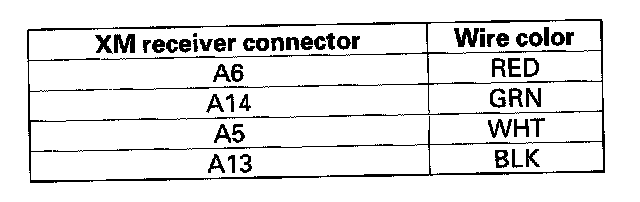
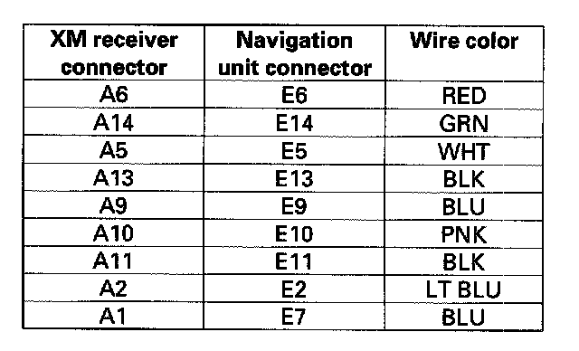

Poor or No Sound With XM Radio (Navigation Unit Does Display XM Channels) (With Navigation)
Poor or no sound with XM radio (navigation unit can display XM channels) (with navigation)NOTE:
- Check the radio reception in an open area. Compare it to a known-good vehicle whenever possible. Poor reception/interference can be caused by tall buildings, mountains, or high-voltage power lines that are nearby.
- If you can only tune to channels 000, 001, 174, and 247, make sure the audio unit is set to the channel mode (see owner's manual), if it is set to channel mode, call XM satellite radio customer support and check the account activation status.
1. Turn the ignition switch to ACC (I).
2. Turn on the navigation unit and select XM radio.
3. Check for an error message on the display.
Are there any messages displayed?
YES - Go to error code list.
NO - Go to step 4.
4. Disconnect navigation unit connector E (14P) and XM receiver connector A (14P).

5. Check for continuity between XM receiver connector A (14P) and body ground according to the table. Then check for continuity between the same terminals listed in the table and navigation unit connector E (14P) No.4 terminal (the harness shield).
Is there continuity?
YES - Repair short in the wire between the navigation unit and the XM receiver. Replace the appropriate shielded harness.
NO - Go to step 6.

6. Check for continuity between XM receiver connector A (14P) and navigation unit connector E (14P) according to the table.
Is there continuity?
YES - Substitute a known-good XM receiver, then reconnect the all connectors and recheck. If the symptom/indication goes away, replace the original XM receiver. If the symptom/indication is still present, replace the navigation unit.
NO - Repair open in the wire between the navigation unit and the XM receiver.